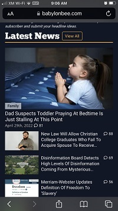
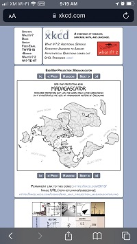

Rule of Thirds
The Babylon Bee
babylonbee.com Once you know the rule of thirds, you begin to see it everywhere. Close in pictures have the head in the top third and/or in the left or right third of the image. Text or symbols will be offset to the other side of the subject and also often in the upper third.
As an amateur and as someone with no design or photography experience I have always assumed that centering the subject was the right way to go. Now that I have learned the rule of thirds I am able to see the ways in which putting the subject off center actually makes them more visually important.
Contrast
XKCD
XKCD.com Contrast is important for creating websites that really work visually. The more you pay attention to contrast the easier your website will be to read and understand.
The most basic rule of contrast is to make sure text has sufficient contrast with the surrounding image or background color. If a light color text is paired with a light color background or image then the text can be very difficult to read. It will take the reader extra time to figure out what is going on and will cause a sense of frustration.
Another princple of contrast is to make sure elements within the page have contrasting colors when they have contrasting functions. For instance, borders between similar elements of the page like thumbnails to external content may have a different color from the internal content.
Whitespace
Drudge Report
drudgereport.com
Whitespace will help relax and guide your reader through the website. A web page that is completely full of content leaves the reader with a sense of clutter and without clear direction about how to move from one section to another.
Adding whitespace will help break your thematic sections apart from each other visually and guide the readers eyes through the content more naturally. In the drudgereport screenshot you can see that the images are all left aligned with whitespace to the right. This breaks the sets of links into sections that naturally go together. This also gives the reader a break from the monotony of endless lists of article links.
Off the topic of whitespace you can also see that drudge has missed some details in their small screen or mobile version. The website logo is overlapping the primary article link a little. If you look at it on a larger device you can see that it is meant to have some vertical space between the headline article title and the page logo.